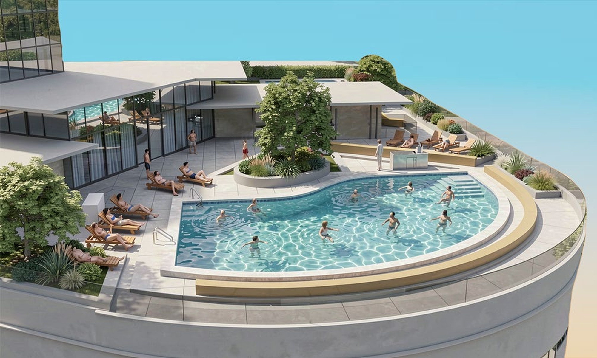
Amenity Deck Engine
A parametric workflow for a high-rise podium deck, balancing complex site constraints—mechanical clearances, egress cores, and hardscape—with three distinct privacy zones.
The engine is a six-phase Grasshopper and Python pipeline. It reads the Rhino boundary, buffers the fixed obstacles, and uses a straight-skeleton algorithm to seed pool locations against a target deck-to-water ratio. A weighted Voronoi power diagram resolves the overlaps into obstacle-clipped cells, and a final phase converts those cells into grid-aligned basins with coping, typed by width.
What it returns is not a finished plan but an allocation—curves and cells showing where programmatic density wants to settle on a tightly constrained floor plate. Re-run, one definition produces a field of options rather than a single answer.
The deck was designed off that allocation. I offset from the curves the engine produced and developed the basins, coping and soaking pools by hand: not arbitrarily, but from the shapes the script gave me. The engine did the spatial reasoning; the design judgment was mine.
*The two photoreal perspectives are Rhino renders finished with AI enhancement. Every drawing and diagram here is output from the definition.
The engine
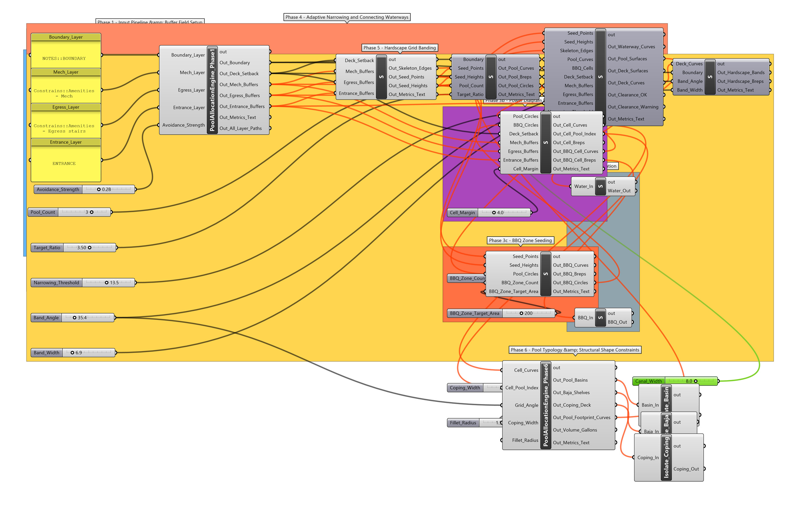
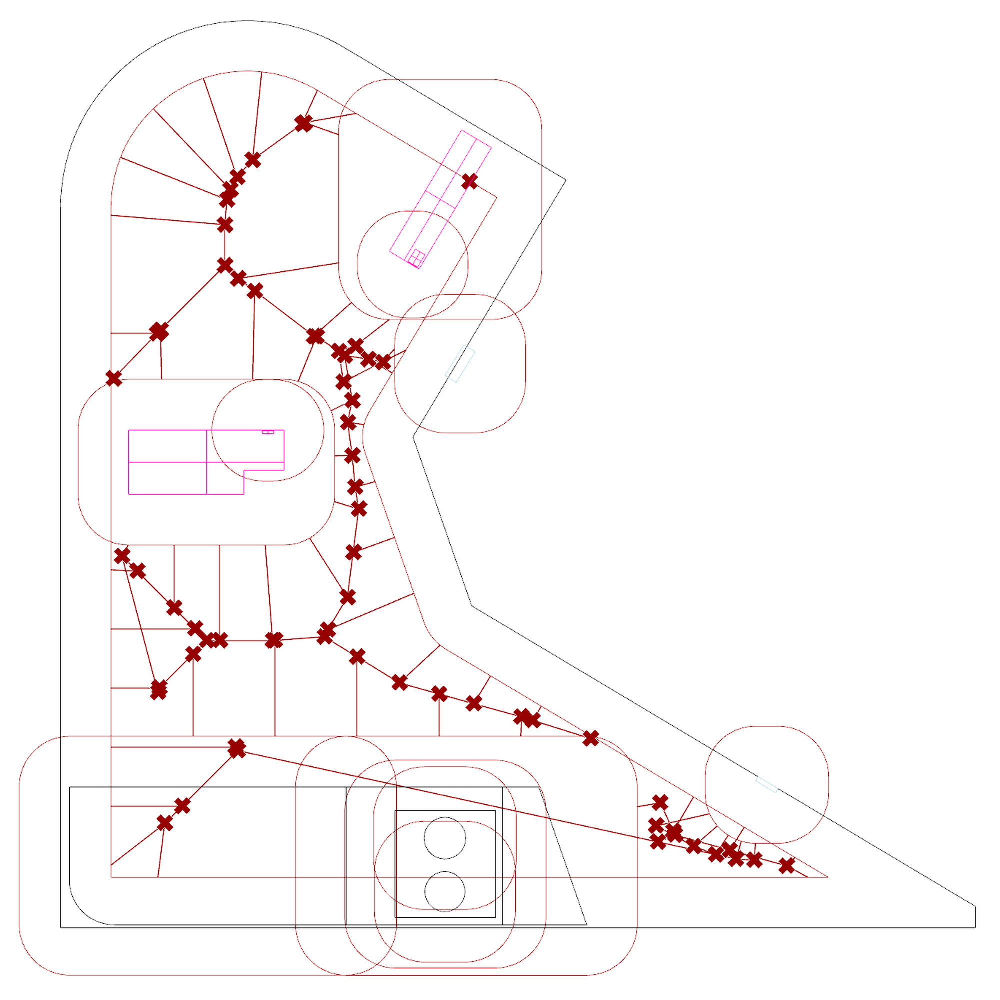
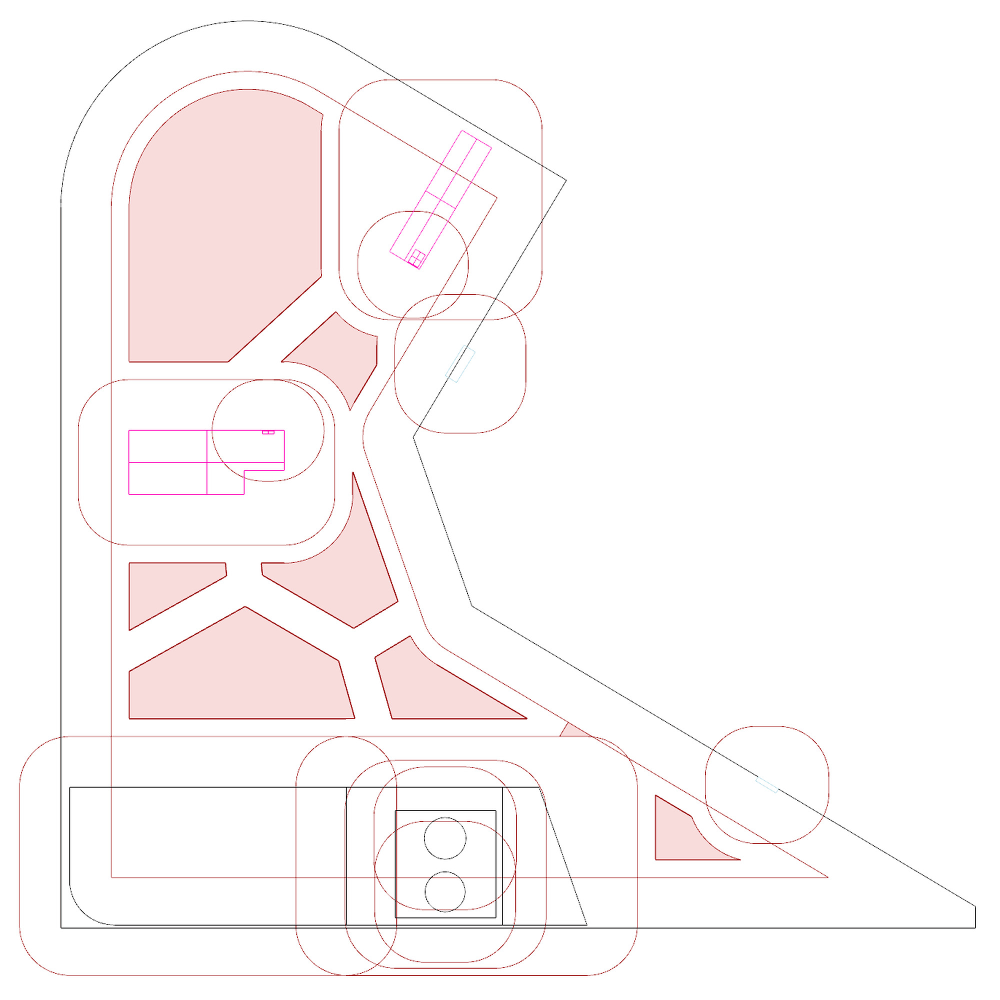
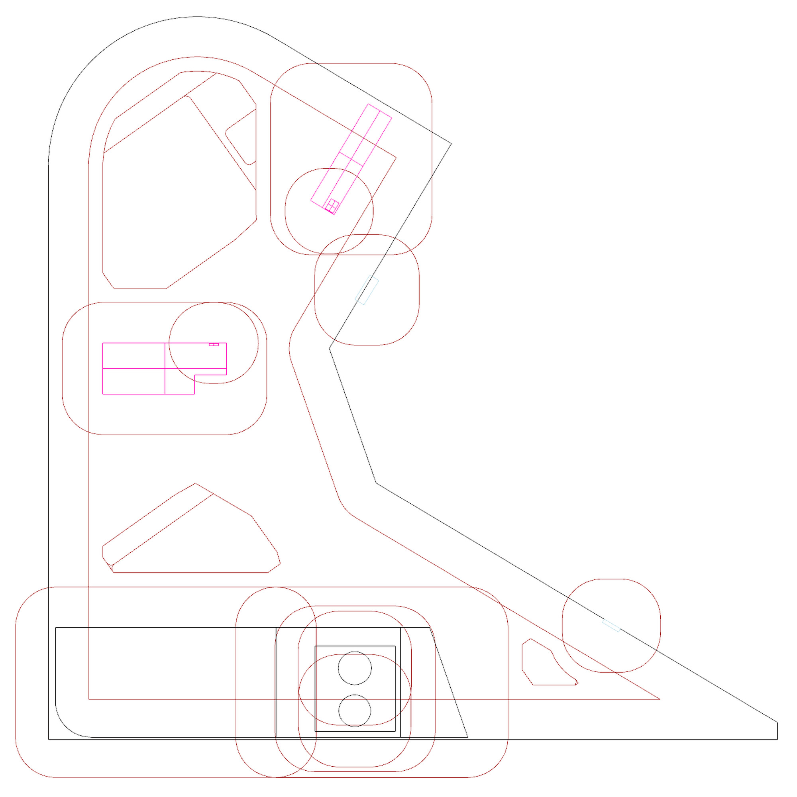
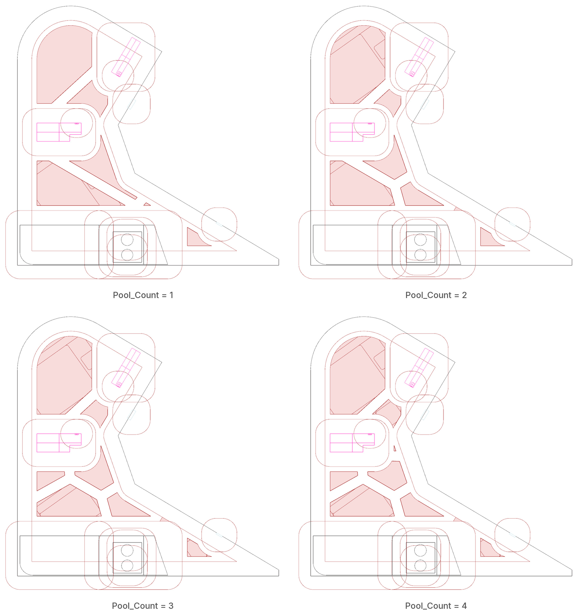
From allocation to design
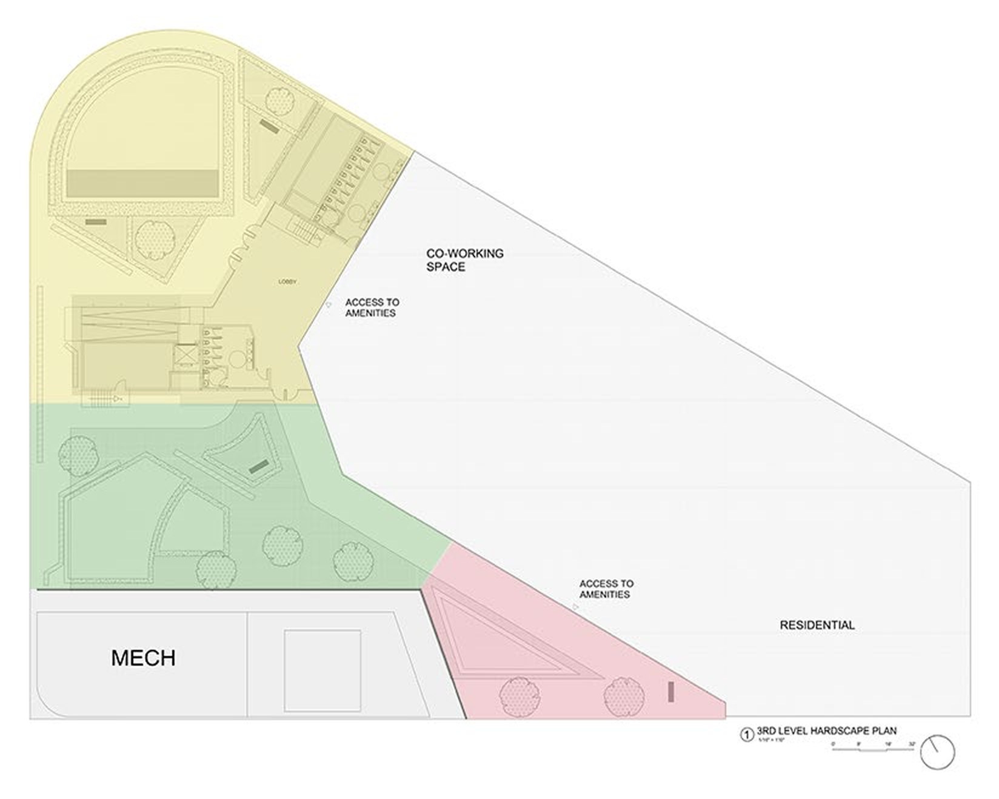
The deck
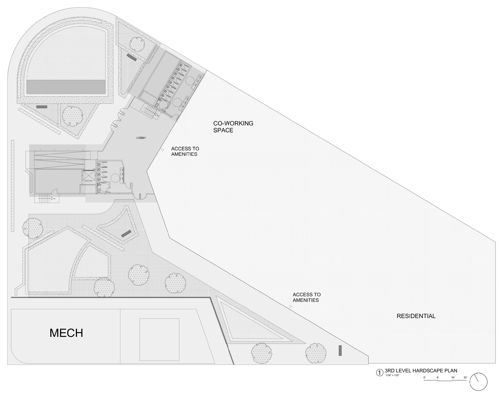
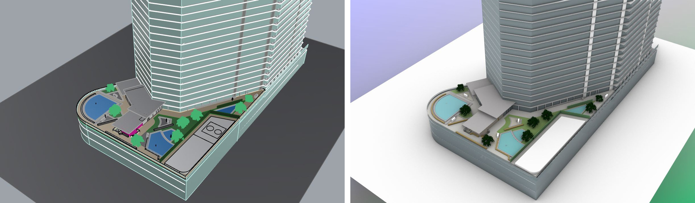
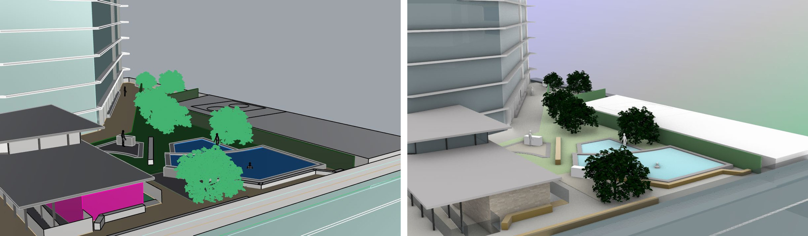
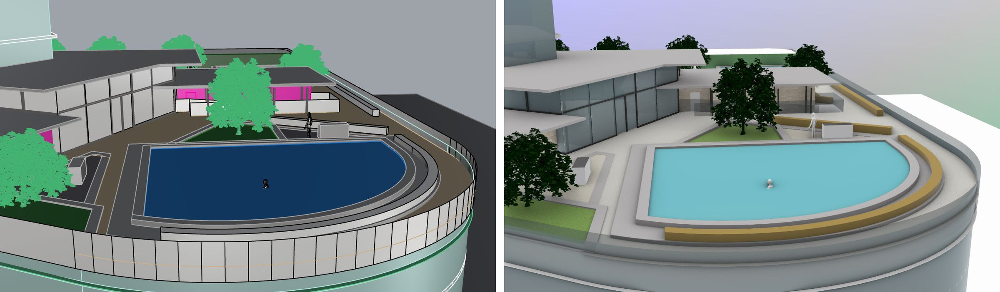
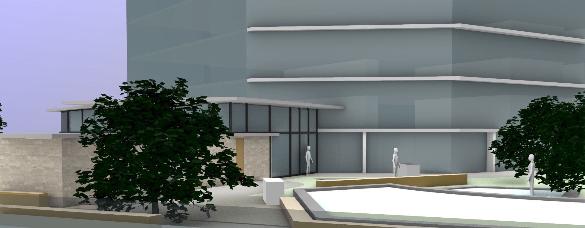
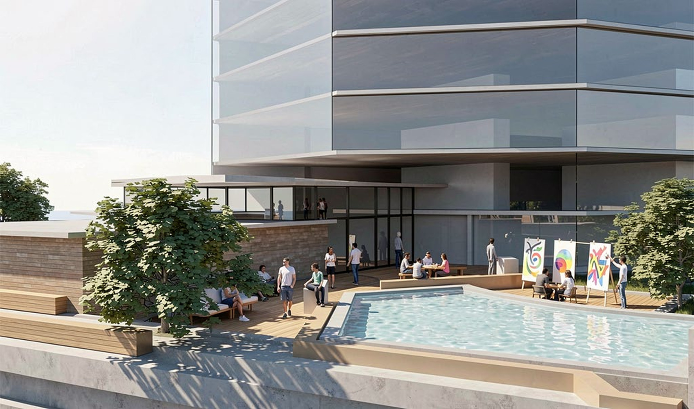